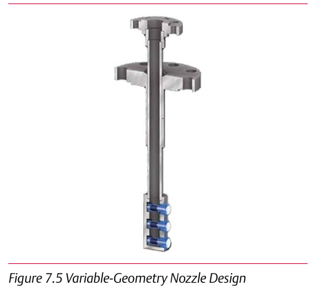

Fixed vs. Variable-Geometry Nozzle: Extending Rangeability


Variable-geometry (backpressure-activated) nozzle desuperheaters extend rangeability to 20:1 at the same minimum velocity as the fixed-geometry design — the mechanical difference (a spring-loaded, backpressure-activated nozzle vs. a fixed orifice) is what buys the extra range. Component Index: cvh-cmp-fixed-geometry-nozzle, cvh-cmp-variable-geometry-nozzle.